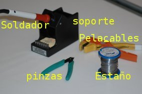
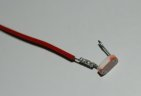
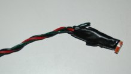
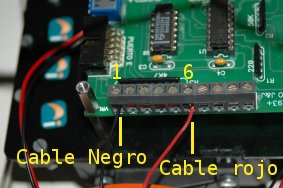

|
Taller de Robótica UCA 2005. SESION 4. Preparación del sensor de luz |
Vamos a colocar el sensores de luz o LDR en el robot. Los situaremos a modo de antena en el robot y nos servirá para detectar objetos luminosos. Una LDR proporciona un voltaje dependiente de la intensidad de luz, por lo tanto es un sensor analógico y lo tendremos que manejar usando una entrada analógica de la SKYPIC, situadas en el Puerto A, el mismo que hemos usado para los bumpers.
Materiales
|
 |
Herramientas
|
 |

Como se puede apreciar en la figura, una LDR tiene dos patas. Vamos a soldar el cable rojo a una de ellas y el negro a la otra. No importa la polaridad por lo que podemos poner cada cable en la pata que queramos. Luego protegeremos la soldadura con un poco de cinta aislante y montaremos la LDR en el lugar que queramos, una opción es ponerla como si fuera una antena.
Finalmente conectaremos el cable negro a la clema 1 de la CT293+ y el cable rojo a la clema 6. Si necesitamos que la LDR detecte la luz de forma direccional conviene encapsularla de tal forma que sólo podamos recibir la luz por un pequeño orificio.
El proceso se muestra en las siguientes figuras:
| Paso 1) Soldamos el cable rojo a una de las patas | Paso 2) Soldamos el cable negro a la otra pata |
 |
 |
| Paso 3) Protegemos la soldadura | Paso 4) Hacemos la antena |
  |
 |
| Paso 5) Montamos la LDR | Paso 6) Atornillamos la antena |
 |
 |
| Paso 7) Conectamos a la CT293 | Paso 8) Encapsulamos la antena |
 |
 |
Vamos a utilizar el cable de bus paralelo cruzado, que esta marcado como CT1. Lo vamos a conectar por un extremo al Puerto A de la SKYPIC (etiquetado como CT1), y por el otro al puerto E de la CT293+.
| Paso 14) Foto cable | Paso 15) Foto cable colocado |
 |
 |
En la siguiente tabla vemos la correspondencia entre las clemas de la CT293+ y el Puerto A de la SKYPIC. Nosotros vamos a leer el estado de la LDR por el puerto A del PIC. En ese puerto hay 6 entradas que se pueden configurar como entradas analógicas o como IOs digitales. La LDR es un sensor de entrada analógico.
| CT293+ Puerto E | SKYPIC Puerto A | Descripción |
| Clema 1 | GND | Cable negro Bumpers Cable negro LDR |
| Clema 2 | PA1 | Cable rojo bumper 2 |
| Clema 3 | PA3 | --- |
| Clema 4 | PA4 | --- |
| Clema 5 | NC | --- |
| Clema 6 | PA0 | Cable rojo LDR |
| Clema 7 | PA2 | Cable rojo bumper 1 |
| Clema 8 | PA5 | --- |
| Clema 9 | NC | --- |
| Clema 10 | VCC | --- |